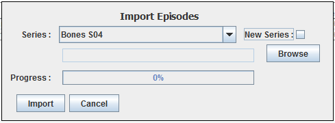
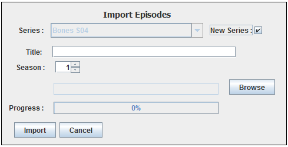

| Import Episodes |
|---|
|
You can bring up the import episodes dialog by clicking Tools-Import Episodes.
You can import episodes of a series that's already in the database by selecting it
from the drop down menu.Then select the eef file by clicking on the browse button. If the episode is already in the database the title and aired date will be updated else the episode will be inserted as new. |
|  |
| Import episodes to an old series |
|
If you want to import the episodes to a new series click on the new series checkbox and the
new series options will appear. You type the title and the season of the series and the new series will be created and the episodes will be imported. |
|  |
| Import episodes to a new series |